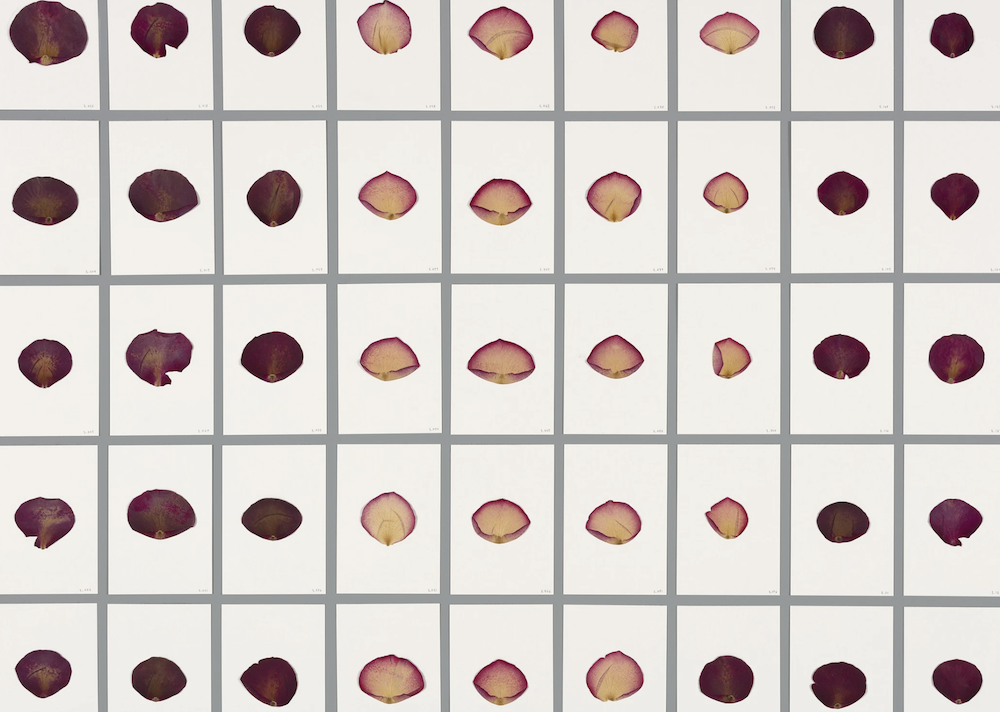

Handmade Dataset
Final Project
Description
You and your team will create a training dataset of images together throughout the rest of the semester. At the end of the semester, we will train a Generative Adversarial Network on your dataset. You will not be assessed on the results of the GAN, but rather the thoughtfulness, care, and consideration of your dataset creation process. You will need to have at least 800 images within your dataset so please take that into consideration when developing your project idea. **The more homogenous your images are, the "better" your GAN will work. The more diverse your images are, the more images you will need to get an output that resembles the input images. Because of this, I am limiting your subject matter/ideas to that which can fit within our "photo station" and be photographed/filmed on a consistant black or white background. So your subject matter should be able to fit on a table top space of 15" x 15."
Technical Specifications:
- **Your subject matter should be able to fit on a table top space of 15" x 15."
- Example of Sarah Meyohas rose petal dataset:

- Each image will end up being square. I can automatically crop images for you but because of this, you will want to center your subject matter in the middle of the frame.
- You don't need to label your images with categories or descriptions. We will be using StyleGAN which just takes a dataset of images and generates images based on the training data.
- You will upload your dataset to a google drive folder that I will create for your group.
- You will need at least 800 images (see below for tips)
Tips:
- You can also use video stills. This is a great way to generate thousands of images easily without taking individual photos. I have a script for automating the process of splitting video into image frames and can do this for you.
- Depending on your subject matter, you can also photograph your objects in a variety of positions. For example, one photograph of a coin can become four photographs if I turn it and flip it in a different way for each image.
- Upload as you go. Don't wait until the last minute to transfer your images to the google drive (you don't want a situation where your external harddrive breaks, or your camera/phone is lost and you lose all your work!)
- The more homogenous your images are, the "better" your GAN will work. The more diverse your images are, the more images you will need to get an output that resembles the input images.
- In regards to the above point, you can edit your images to create homogeneity. For example, I have done this with a dataset of faces where I used facial recognition to align the images so that the eyes are in the same position across the images. Reach out to me if you have alignment questions and I will be able to tell you whether alignment can be automated or needs to be manually done.
Submission schedule:
Photo Station Sign-up sheet: link
Inspo: